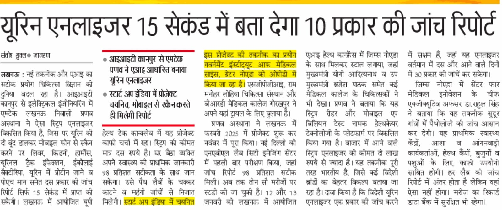
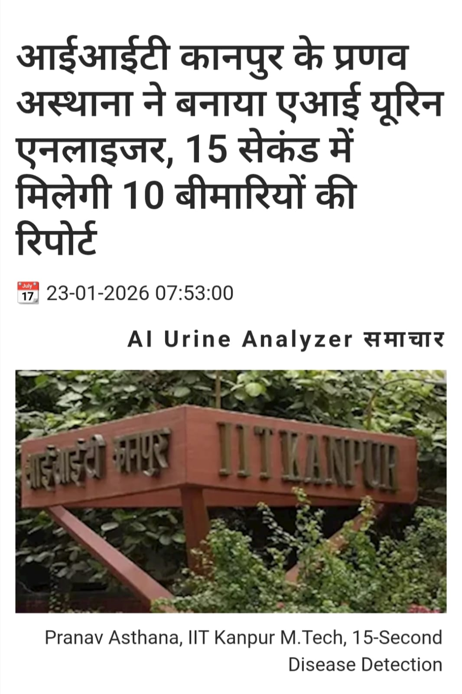

Coverage of BillionTests' AI urine strip analyzer, developed by Pranav Asthana of IIT Kanpur.

Coverage of the AI-based urine strip analyzer developed by IIT Kanpur M.Tech alumnus Pranav Asthana, selected for Startup India, presented at a UP health-tech conclave in Lucknow.

Published 23 Jan 2026. Profile of the strip-reading technology and its rapid, multi-parameter screening capability.
More coverage added as it's published. For press inquiries, contact mpsethi@billiontests.ai.